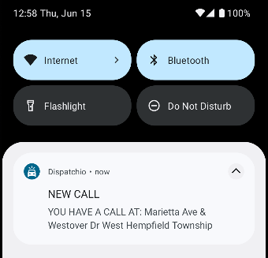
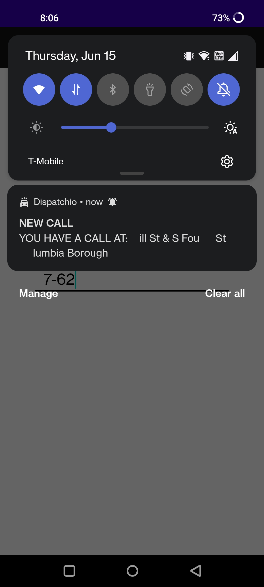
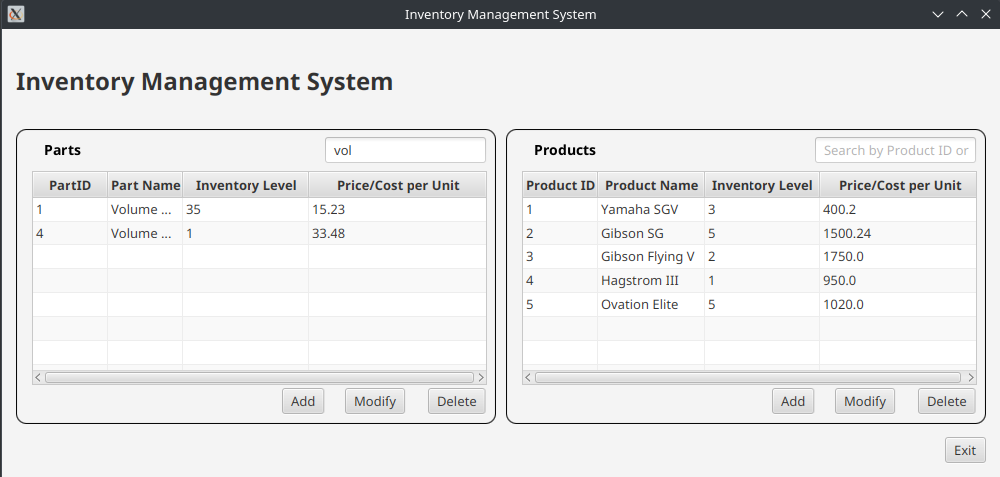
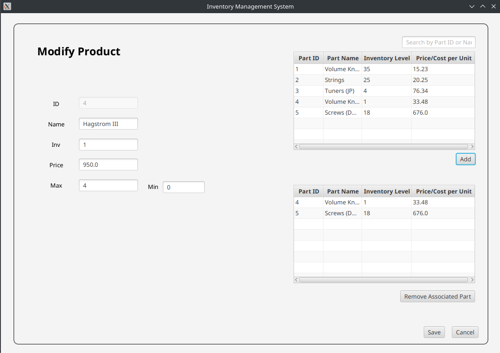
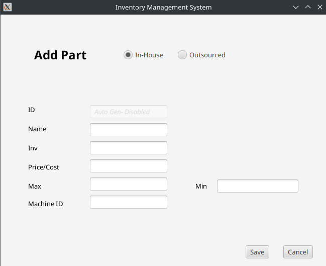

EasyChart
Developed an application using Python to ease the process of writing EMS patient care report narratives.
Dispatchio
Developed a mobile app using Java and Android Studio to track EMS and Fire dispatching in Lancaster County, PA.
Although all the information used is publicly available, the address on the second demonstration image is censored to respect patient privacy.
 Inventory Management Application
Java inventory management desktop application with a JavaFX UI.
  
Scheduling Application
CRUD desktop app using MVC methodologies. Programmed in Java, utilizes a MySQL database and a JavaFX UI.
Contact Me
- Email: bzksj7@gmail.com
- Website source code available here.